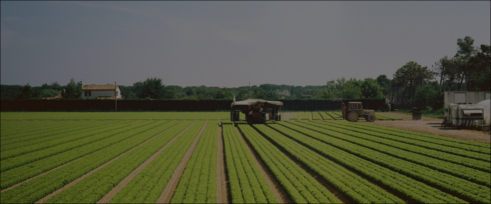
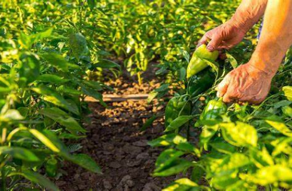

Transformando Terras em Sorrisos:
CultivaMais, Alimentando o Futuro!
Bem-vindo à CultivaMais!
Aqui, estamos reunidos com um objetivo em comum: garantir que todos tenham acesso a alimentos nutritivos e suficientes.
Convidamos todas as ONGs comprometidas com essa causa vital a se juntarem a nós nessa jornada.
SEJA UM PARCEIRO DA CULTIVA+ →
